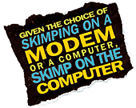

The topic of buying a computer is a subject upon which many people have opinions, mostly conflicting.
After all, making the decision to buy is easy; finding the money is difficult. Now comes the impossible
part: figuring out which computer to buy. You could rely on computer salespeople to guide you on this
perilous mission, but this is impractical for two reasons. First, either the salespeople are minimum-wage
drones who have only a dim perception of what they are selling, or worse, they have been taught just
enough techno-jargon to fool the layman into believing they know what they are talking about. In the
course of my
travels, I overheard one salesman tell a credulous customer that Packard Bell was
a division of Hewlett-Packard. After
surreptitiously setting the customer straight, I chatted up the salesman, and discovered that he truly
believed that this was the case. (For the clueless salesman out there, these two companies have nothing to
do with
each other.)
The topic of buying a computer is a subject upon which many people have opinions, mostly conflicting.
After all, making the decision to buy is easy; finding the money is difficult. Now comes the impossible
part: figuring out which computer to buy. You could rely on computer salespeople to guide you on this
perilous mission, but this is impractical for two reasons. First, either the salespeople are minimum-wage
drones who have only a dim perception of what they are selling, or worse, they have been taught just
enough techno-jargon to fool the layman into believing they know what they are talking about. In the
course of my
travels, I overheard one salesman tell a credulous customer that Packard Bell was
a division of Hewlett-Packard. After
surreptitiously setting the customer straight, I chatted up the salesman, and discovered that he truly
believed that this was the case. (For the clueless salesman out there, these two companies have nothing to
do with
each other.)
The second reason sales- people are useless in helping you buy a computer is that they are highly biased by things you don't know about. Management may make a priority of selling a particular product because the manufacturer is offering a "spiff" for each product sold. Spiff is a polite word for kickback, and politicians who accept them usually go to jail (if caught), but salesmen get to be "Salesman of the Month." Spiffs are paid to the salesman who makes the sale (in the case of commissioned sales help), or to the company. So, given the choice between recommending two computers to you -- one that fits your need perfectly, and one that doesn't, but puts $50 in the salesman's/company's pocket -- which do you think will be recommended?
So, finding yourself in such an untenable position, you might look kindly upon assistance in the form of unbiased (unbiased by marketing flaks, that is) recommendations from a computer technician with a writing sideline, who can point out the pitfalls and hidden agendas of the computer industry, and hopefully guide you to a purchase which won't sit in a corner and snicker at you for the next five years (like that NordicTrack you bought last year).
With that in mind, I went out and did your homework for you -- well, some of your homework. Since buying a computer is a pretty broad subject, one which could conceivably consume reams of pages and millions of words, we are going to have to narrow the scope a bit. We are going to discuss the minimum tools needed to get on the 'net, with an eye toward used equipment so as to preserve your financial resources.
For those of you with money (or a credit card with a cherry credit line), I recommend two very good computer systems which contain the USDA recommended amount of silicon needed to get you wired into the data stream. These systems are not the cheapest, nor are they the most expensive, but they do have the best mix of features, performance and warranty for the money.
Compaq Presario 7180: The 7180 is one of the best all-around machines for the money, providing you with a CD-ROM drive, a 14.4K FAX/modem, and enough RAM, disk space and sound capability to get you online. The software mix is useful, the hardware reliable and the warranty one of the best in the industry (three years, one year on-site, with the second and third year covering parts only). Compaq offers 800 tech support seven days a week, 24 hours a day. The 7180 goes for around $1,900.
The 7180 does not come with a monitor, so you will need to add one. The most likely candidate is the Compaq 14SV which can be had for about $300, but you can find cheaper monitors. Just remember to specify a non-interlaced monitor with a dot pitch of at least .28mm, or your eyes will hate you.
Apple PowerPC 6200CD:The best buy of the bunch, with everything you need INCLUDING the monitor. If you are interested in ease of use and easy-to-install peripherals, then Apple is the way to go. The only real disappointment is the one-year warranty.
All right, so money is an object. Lower your expectations a bit, and you can still do quite well. The best thing to look out for is a used system, preferably a major brand name like IBM, Compaq or Apple. Obviously, an IBM XT or an Apple IIc is going to be hard pressed to run today's 'net software and handle high speed modems, so you need to look at somewhat newer hardware. On the PC side of the equation, you need at least a 386 system, 4MB of RAM, a 120MB hard drive and Windows 3.1. On the Apple side, a Mac with similar storage specs should fit the bill.
If you cruise your local classifieds or the pages of a publication like Computer Shopper, you will find lots of old equipment for sale. One highly versatile system I have recommended for a number of people has centered around the Compaq Aero laptop computer. The Aero is the Rodney Dangerfield of the laptop world, with computer pundits bitching about its small keyboard and missing floppy drive. The keyboard is nothing to write home about, but you can get used to it in a day or two. Compaq corrected the second shortcoming, and shipped an external floppy with later versions of the model. The Aero came in a monochrome version (with either an 84MB or a 170MB hard drive) or a color version (with a 250MB drive). The monochrome unit had a 486-25 CPU, 4MB of RAM, Par/Ser ports, a PCMCIA slot (Type II) DOS and Windows. I have seen the 84MB model advertised for as little as $550, which if you add a nice 28.8K modem to the package would put the total price in the $800 range -- not bad for a low cost starter system that still has Compaq's three-year warranty to back it up.
Why is this laptop so cheap? Because, while it was a decent little computer, Toshiba, IBM and NEC were putting out better models for the same money. So, why shouldn't you buy the "better" models instead of the Aero? Because the better models still cost $1,300 and up, while the Aero now costs half as much due to lack of demand.
Similar deals can be found for similar reasons on IBM's PS/1 series of computers, Compaq's Prolinea and Deskpro models, and Apple's early PowerMacs. Most systems will be sold without monitors, and while you can use monochrome monitors if you must, color is highly advised.
That brings us to the most critical component of any cyberspacecraft: the modem. I'll tell you a dirty little secret that the folks who sell computers would just as soon I not divulge: Even the weeniest 286 computer can process data faster than the fastest 28.8K modem. So, given the choice of skimping on the computer or skimping on the modem, skimp on the computer.
 The rule of thumb for the modem is simply this: the faster, the better. There are a few caveats (Latin for "watch your ass") to this rule. First, your service provider has to have high-speed lines, or you're wasting your money. If you can only dial in at 9600 baud, your transwarp modem is going to twiddle its thumbs a lot. Second, if your local phone service is run by Joe and Sara using two soup cans and a string, you are wasting your money if you buy a fast modem. Poor quality phone lines force modems to slow down to compensate for errors. Third, if you are using an older computer you should probably buy an internal modem instead of an external, since the older serial port will be unable to handle high-speed data transmissions over 14.4K.
Why should you buy an external, instead of an internal, modem, especially when internals are cheaper? Because externals are easier to install, don't use an expansion slot, won't conflict with existing serial ports, and have really useful lights on the front to help you diagnose communication problems. Okay, so what modem should you buy? Any modem you buy should be fully Hayes compatible and V.34, V.42bis compliant, and support MNP-5 and LAP-M protocols. Don't worry about what all this means (the salesman doesn't know either); just make sure it is on the box. As to what brand to buy, I personally wouldn't touch anything that wasn't made by Hayes or U.S. Robotics. You will find many cheaper modems, but you will get what you pay for. Hayes and U.S. Robotics are universally supported by every online service and ISP I have seen, so you can't go wrong buying them. Expect to pay $300-400 for these babies, but expect to get your money's worth. The systems I have mentioned are strictly geared toward getting you on the 'net without bankrupting you. While a 386- 25 computer does an acceptable job of running Netscape or AOL software, it stinks at running WordPerfect for Windows or Windows 95. If you need a "multipurpose" system, then buy one of the all-in-one systems I mentioned above. Otherwise, save your money for faster modems and bigger hard drives.